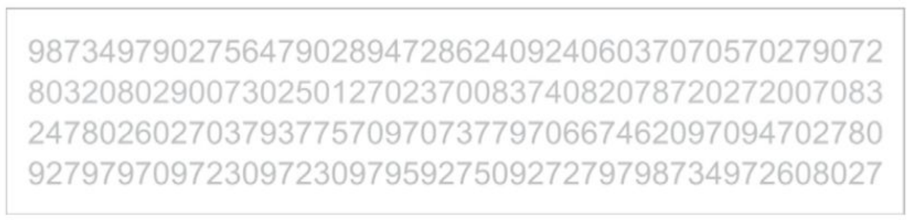
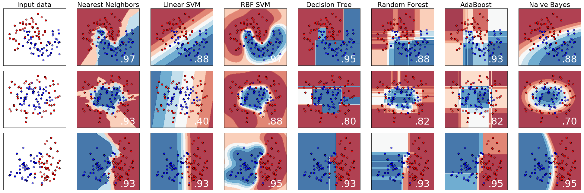

* C64 Mucke als Soundtrack im Hintergrund * https://www.youtube.com/watch?v=huEUOPDPbgQ * https://www.youtube.com/watch?v=AE77tYu5EA8 * https://www.youtube.com/watch?v=U9Racui9jJI * Wizball: https://www.youtube.com/watch?v=6VYP5pLBnZ8 * Codes für Manning Crash Course * Embarc Powerbanks * Bücher von SuS bereit halten, falls die welche raus tun * Zur Not mein ML Buch von Oreily * Post Its mit Namen und Punkten für die Teams darauf
# Quiz Total chaotisch und ungerecht Aber mit Preisen! <!-- https://djcordhose.github.io/ai/2019_quiz.html --> <!-- ## Täuschungen aus Wissenschaft, Statistik und Wahrnehmung --> <!-- <br> <br> #### <a href="http://zeigermann.eu">Oliver Zeigermann</a> / <a href="http://twitter.com/djcordhose">@DJCordhose</a> -->
### Wie funktioniert es? * Vier Teams spielen gegeneinander * Diskutiert Antworten im Team * Antworten per Buzzer anmelden * Bei richtiger Antwort gibt es einen Punkt * Bei falscher Antwort sind nur noch Antworten durch die anderen Teams möglich * Es gibt keine Minuspunkte
## Bildet jetzt Teams * 3 Runden mit unterschiedlichen Teams * 4 Teams mit max. 3 Leuten pro Runde * Team braucht einen Namen * 5 Fragen pro Runde * Gewinne für Siegerteam * Insgesamt 15 Fragen 3x3 Gewinne * Akku Powerbank * Video Kurs Neuronale Netzwerke (Englisch) * Buch Einführung in ML * SuS Bücher
## Runde I <!-- * Wissenschaft ok * Statistik ok * Spaß ok * Wahrnehmung ok * Visualisierung ok * Info ok -->
### 3 Teams nach vorn <img src='img/vacant.jpg' height="800px">
### Namen der Teams
#### Kategorie: Visualisierung ### Welches ist das häufigste Element in der Erdkruste <img src='img/quiz/periodicTable.png' class="fragment" height="600px"> <small> https://research.google.com/bigpicture/elements/ </small>
#### Kategorie: Wissenschaft (mehrere Punkte treffen zu) ### Welcher dieser vermeintlichen Fakten ist wissenschaftlich nicht belegbar? 1. Alkohol tötet Gehirnzellen 1. Glas ist eine sehr zähe Flüssigkeit 1. Wir stammen vom Affen ab 1. Wir nutzen nur 10% unserer Hirn-Kapazität <small> https://www.verywellmind.com/myths-about-the-brain-2794884 https://thebestschools.org/magazine/25-popular-science-myths-debunked/ </small>
<!-- #### Kategorie: Spaß - Ersatzfrage, falls erste zu schwer - Bild wird ausgeblendet bei ersten Buzz --> #### Kategorie: Spaß - Bild wird ausgeblendet bei ersten Buzz ### Was ist ganz oben links <img src="img/ai/dog-vs-bread.jpg" height="500px" class="fragment">
#### Kategorie: Nerd / Statistik ### Statistiker oder Verkäufer Nehmen wir an, 90% aller Statistiker sind schüchtern und nur 5% aller Verkäufer _Du triffst einen schüchternen Menschen irgendwo auf der Straße, ist er eher Statistiker oder Verkäufer?_
#### Kategorie: Wahrnehmung - Bild wird ausgeblendet bei ersten Buzz ### Wie viele Ausreißer? <img src='img/quiz/franconeri_test_2.jpg' height="650px" class="fragment"> <br> <small> https://twitter.com/SteveFranconeri/status/996309506425544705 </small>
### Info-Runde: Liste Cognitive Biases Best-of: * _Dunning–Kruger effect_: The tendency for unskilled individuals to overestimate their own ability and the tendency for experts to underestimate their own ability * _Halo effect_: The tendency for a person's positive or negative traits to "spill over" from one personality area to another in others' perceptions of them * _Self-serving bias_: The tendency to claim more responsibility for successes than failures. It may also manifest itself as a tendency for people to evaluate ambiguous information in a way beneficial to their interests * _Projection bias_: The tendency to overestimate how much our future selves share one's current preferences, thoughts and values, thus leading to sub-optimal choice <small class="no-fragments"> Quellen: * new Cognitive Biases: A Visual Study Guide: https://drive.google.com/file/d/1p4bPdFaTC7ro-o1yLwCJtx-XawSkHS-_/view * https://en.wikipedia.org/wiki/Cognitive_bias * https://en.wikipedia.org/wiki/List_of_cognitive_biases </small>
### Tie-Breaker Umap Zoo https://duhaime.s3.amazonaws.com/apps/umap-zoo/index.html
## Runde II <!-- * Wissenschaft ok * Statistik ok * Spaß ok * Wahrnehmung ok * Visualisierung ok * Info ok -->
### 3 Teams nach vorn <img src='img/vacant.jpg' height="800px">
### Namen der Teams
#### Kategorie: Visualisierung ### Welche Metropolregion hatte als erste mehr als 10 Millionen Einwohner? <video src='img/quiz/metropol.mp4' controls height="500"></video> Spezialregel: jedes Team bekommt einen Tipp, keine doppelten Tipps, wer zuerst buzzed darf zuerst wählen <small> @jburnmurdoch: https://twitter.com/i/status/1107595419557740549 </small>
#### Kategorie: Spaß - Bild wird ausgeblendet bei ersten Buzz ### Was liegt neben dem Stuhl der Dame, die uns den Rücken zudreht <img src='img/quiz/purse_or_dachshund.jpg' height="650px" class="fragment"> <small> https://twitter.com/dumb_hannah/status/891678558841708544 </small>
### Info-Runde: Bias - Correlation vs Causation <img src='img/quiz/correlation-vs-causation-bias.jpg' height="850px">
#### Kategorie: Nerd / Statistik ### Wo würdest du die Panzerung verstärken? <img src='img/quiz/ww2-damage.jpg' height="550px"> Im zweiten Weltkrieg zeigten von der US Navy untersuchte, heim gekehrte Flugzeuge hier Treffer durch Beschuss <small> https://twitter.com/ricfulop/status/1101976862325174276 </small>
#### Kategorie: Wahrnehmung - Bild wird ausgeblendet bei ersten Buzz <img src='img/quiz/dots.jfif' height="450px" class="fragment"> <small> https://twitter.com/_youhadonejob1/status/1116335796838125570 </small>
#### Kategorie: Wissenschaft ### Was ist das besondere an diesem Fisch, der gegen den Strom schwimmt? <small> https://twitter.com/chubicki/status/1000457946734759936 </small>
### Tie-Breaker Umap Zoo https://duhaime.s3.amazonaws.com/apps/umap-zoo/index.html
## Runde III <!-- * Wissenschaft ok * Statistik ok * Spaß ok * Wahrnehmung ok * Visualisierung * Info ok -->
### 3 Teams nach vorn <img src='img/vacant.jpg' height="800px">
### Namen der Teams
#### Kategorie: Wahrnehmung - Bild wird ausgeblendet bei ersten Buzz ### Welche Farben haben die großen Bälle? <img src='img/quiz/balls-color.jpg' height="500px" class="fragment"> 1. Blau und Grün 1. Beide Cyan 1. Gelb und Lila 1. Beide Lila <small> https://twitter.com/NovickProf/status/1133211527367073792?s=03 </small>
### Info-Runde: Outgroup Bias <img src='img/quiz/outgroup-bias.jpg' height="750px">
#### Kategorie: Wissenschaft ### Bring die Zahlen in die richtige Reihenfolge 1. Positionen im Schach <em class="fragment">~ 10<sup>50</sup></em> 1. Positionen bei Go <em class="fragment">~ 10<sup>171</sup></em> 1. Atome im Menschlichen Körper <em class="fragment">~ 10<sup>27</sup></em> 1. Sandkörner auf der Erde <em class="fragment">~ 10<sup>19</sup></em> 1. Atome im Universum <em class="fragment">~ 10<sup>78</sup></em> <p class="fragment"><em>Sandkörner, Atome im Mensch, Positionen bei Schach, Atome im Universum, Positionen bei Go</em></p> <small> https://www.quora.com/How-many-grains-of-sand-are-there-on-Earth-and-how-many-stars-are-there-in-the-universe </small>
Kategorie: Spaß - Bild wird ausgeblendet bei erstem Buzz
Was ist oberste Reihe, dritter von links
#### Kategorie: Nerd / Statistik ### Wie oft wechselt der Ball in einem Spiel im Durchschnitt den Besitzer, d.h. die ballführende Mannschaft? Je nach zählweise 1. 10 bis 50 1. 100 bis 200 1. 200 bis 400 <em class="fragment">richtig</em> 1. 1000 bis 2000 <small> Quelle: The Numbers Game: Why Everything You Know About Football is Wrong </small> <!-- -->
#### Kategorie: Visualisierung - Bild wird ausgeblendet bei erstem Buzz ### Welche Berufsgruppe genießt weltweit das größte Vertrauen? <img src='img/quiz/trust-in-professions.png' height="550px" class="fragment"> 1. Politiker 1. Ärzte 1. Wissenschaftler 1. Journalisten <small> https://www.ipsos.com/sites/default/files/ct/publication/documents/2019-09/ipsos-mori-trust-the-truth-event_0.pdf </small>
<!-- #### Kategorie: Visualisierung (mehrere Nennungen möglich) - Bild wird ausgeblendet bei erstem Buzz --> #### Info-Runde: Visualisierung ### Was ist hier alles schräg? 1. Unterschiedliche Skalen 1. Unterschiedliche Zeiträume 1. Fehlende Legende 1. Unklare Zeiträume <small> https://twitter.com/dataandme/status/1139493634141753344 </small>
### Tie-Breaker Umap Zoo https://duhaime.s3.amazonaws.com/apps/umap-zoo/index.html
## Speicher
#### Kategorie: Spaß - Bild wird ausgeblendet bei ersten Buzz ### Was ist in 3. Reihe, 3. Spalte <img src="img/ai/dog-vs-muffin.jpg" height="500px" class="fragment">
### Welche Land hat Stand 2016 den höchsten Ausstoß an Treibhausgasen? <small> https://twitter.com/RARohde/status/1114076320328290305 </small>
### Quiz welches Tier versteckt sich hier? <img src='img/quiz/katz2.jpg'>
### Warum ist es für Tische und Stühle günstig vier Beine zu haben Fermat's Library (@fermatslibrary) tweeted at 2:42 PM on Mon, Jun 03, 2019: Why are 4-legged chairs so commonly used https://t.co/QL0dEEa3JD (https://twitter.com/fermatslibrary/status/1135527056865976321?s=03)
### Nach welcher Programmiersprache wird zur Zeit am meisten auf Stackoverflow gesucht? (die schnellste richtige Antwort zählt) https://twitter.com/vronnie911/status/1125268670324695041
### Wie viele 5en? (die schnellste richtige Antwort zählt)  <small> Theory of attention: https://static.googleusercontent.com/media/research.google.com/en//bigpicture/ML_Visualization_NeurIPS_Tutorial.pdf </small>
### Emergenz Was ist auf diesem Bild? schnellste richtige Antwort gewinnt <img src='img/quiz/emergence_03.jpg' height="400px" class="fragment"> <small> https://eggbertsplace.github.io/principles-of-gestalt/#slide=4 <br> P. Sinha & T. Adelson (1997) </small>
### Sequentielle Wahrnehmung #1 Wie viele? Die schnellste richtige Antwort gewinnt <img src='img/quiz/franconeri_test_1.jpg' height="450px" class="fragment"> <br> <small> https://twitter.com/SteveFranconeri/status/996309506425544705 </small>
### Rein Logisch betrachtet Ein Geschäftspartner kündigt an, mich überraschend nächste Woche an einem der Werktage um exakt 9 Uhr morgens anzurufen. An welchem Tag wird er anrufen?
### Psychologie _Welcher dieser vermeintlichen Fakten ist wissenschaftlich nicht belegbar?_ 1. Power Posing (TED Talk von Harvard Psychologin Amy Cuddy) ist effektiv 1. Wir haben unterschiedliche Lernstile (Audio, Visuell, etc.) 1. Man kann Menschen in linke/rechte Gehirnhälfe-Typen einteilen 1. Männer kommen vom Mars, Frauen von der Venus <small style="font-size: large"> https://www.scienceofpeople.com/myths-pop-psychology/ <br> https://www.mindful.org/7-common-pop-psychology-myths-might-spreading/ <br> https://www.verywellmind.com/myths-about-the-brain-2794884 <br> https://hackspirit.com/scientist-debunks-10-popular-psychology-myths-people-believe/ </small>
## Scratch
### Mehr Irrtümer https://twitter.com/DannyDutch/status/1142298720526131203?s=03
Extinct Animals ü¶ñü¶ï (@Extinct_AnimaIs) tweeted at 9:30 PM on Fri, Jun 28, 2019: The largest penguin ever, Anthropornis, stood at 1.8 metres in height & weighed 90 kilograms! It lived during the Late Oligocene. (Credit: Discott) https://t.co/72PqMmnosq (https://twitter.com/Extinct_AnimaIs/status/1144689598779580418?s=03)
### Anhand der Decision Boundaries den Classifier erraten am Anfang die Verteilung zeigen 
### Bei den nächsten Dingern in 2 zoom Stufen immer weiter heran zoomen Bilder liegen bisher nur als totale vor
### Was ist das?
### Was ist das?
### Was ist das?
### Was ist das?